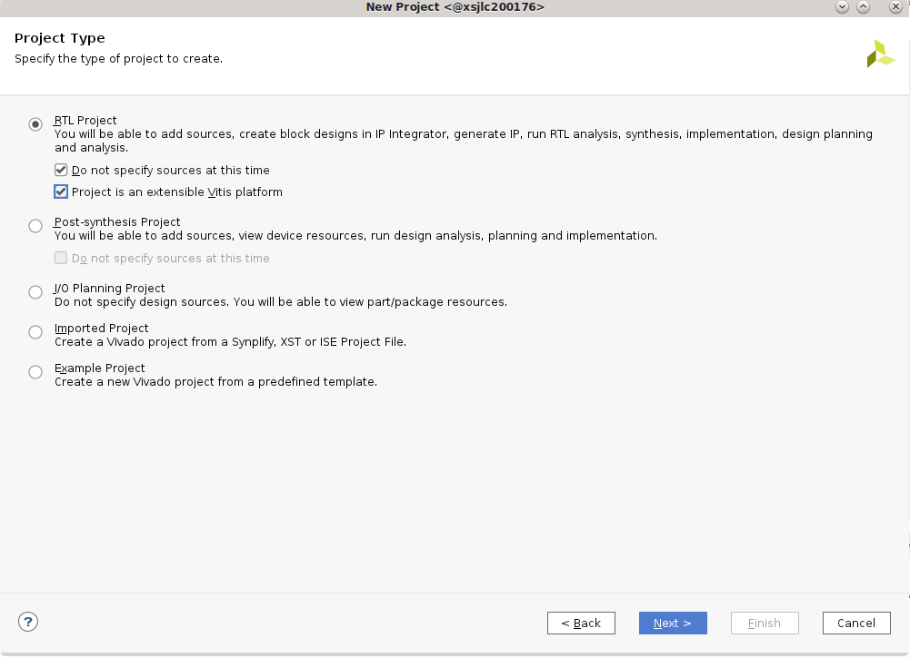
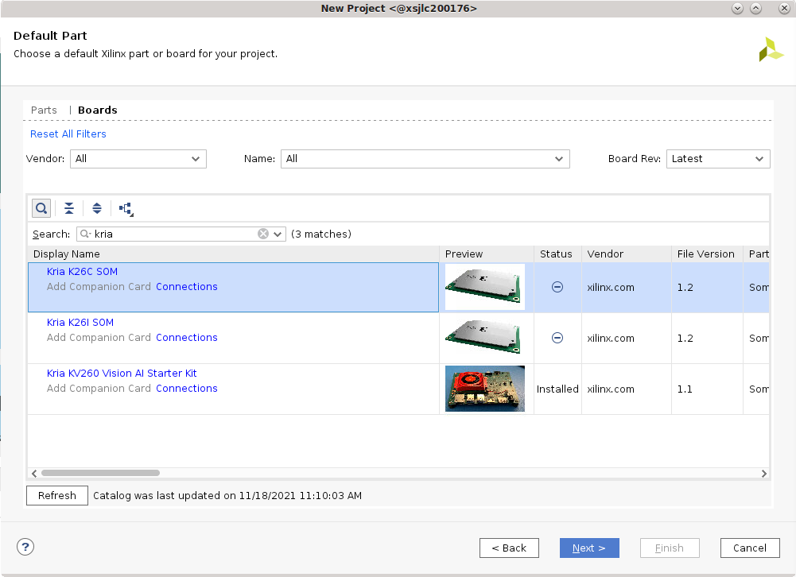
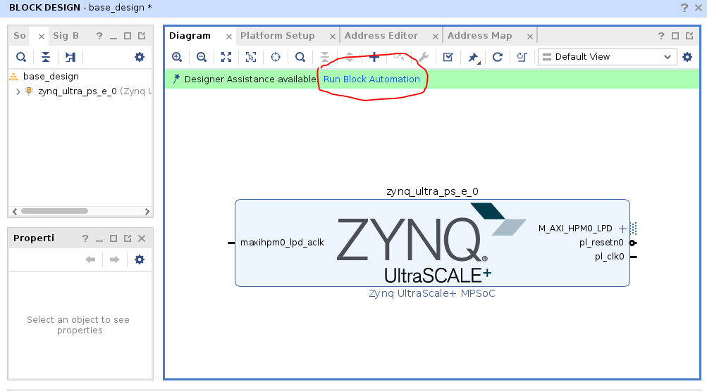
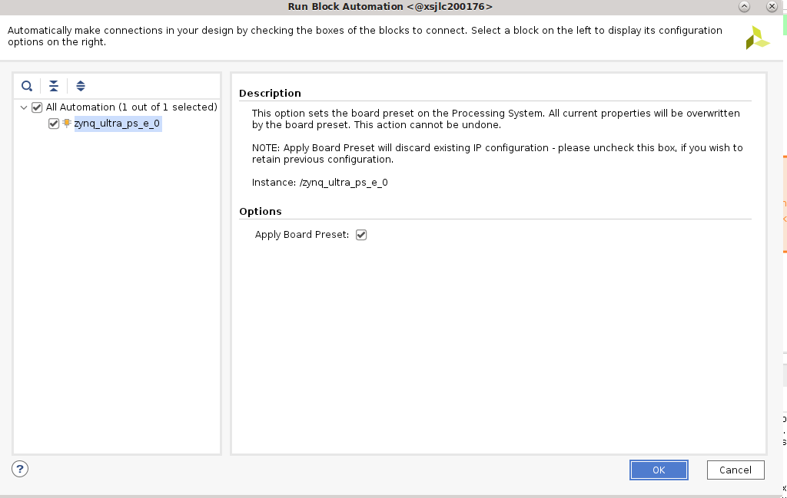
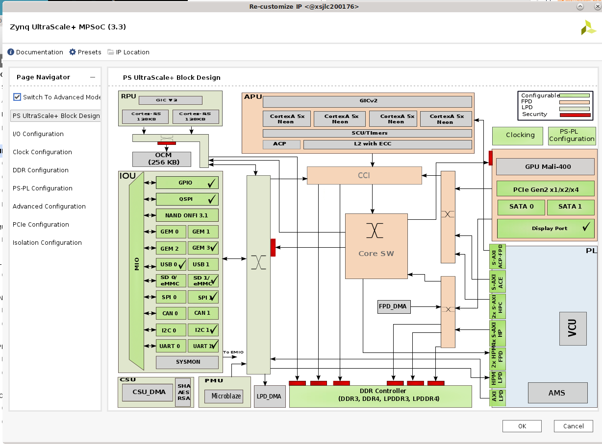

Example: Create a Platform for a Custom Carrier Card¶
You can create a custom carrier card to support your production configuration when migrating from the Starter Kit based evaluation to the production SOM. You need to create a base .xsa design suited for your carrier card + SOM combo. This example creates a base .xsa design for the KV260 (Vision carrier card + Kria SOM) Starter Kit as an example of how to create your own base designs.
Create a Vivado Design¶
In Vivado, click Create Project -> next, and enter
kv260_baseas the project name, and select project location -> next.If you plan to continue with the Vitis Platform Flow and not the ivado Accelerator Flow, select Project is an extensible Vitis platform.

In the Default Part page, select Boards, search for
Kria, and select the appropriate SOM (In this case, select Kria K26C SOM). Do not click connections because you are creating a design for the KV260 manually as an example of creating a project for a custom CC.
Click Finish.
In
Flow Navigator, click IP Integrator -> Create Block Design. Update theDesign nametobase_design.
Set Up the PS Connections¶
In the Diagram tab, to add the IP, click + to. Search for
Zynq UntraScale+ MPSoCand double click to add. Once the block appears, click Run Block Automation.
Keep the selections of “Apply Board Preset” and click OK. This applies the hardware configuration presets that are dictated by the SOM physical design. Special notes on PMU power management functions and default UART are called out in the “MIO Banks” table note #1 of the Kria K26 SOM Data Sheet (DS987).

To configure the block, double-click the Zynq Ultrascale+ block. The KV carrier card includes DisplayPort, SD card, UART, and GEM functionality. These physical MIO mappings are found in the KV carrier card schematic and need to be enabled in the I/O configuration design:
Check High Speed -> GEM -> GEM 3, leaving the default settings (MIO 64… 75)
Check High Speed -> USB -> USB 0 and then USB 3.0, leaving the default setting for USB 0 (MIO 52 .. 63), but change to GT Lane2 for USB 3.0
Check High Speed -> Display Port, change DPAUX to (MIO 27 .. 30) and Lane Selection to Dual Lower
Check Low Speed -> I/O Peripheral -> UART -> UART 1 , and change to (MIO 36 … 37)
Uncheck Low Speed -> Memory Interfaces -> SD -> SD 0
Check Low Speed -> Memory Interfaces -> SD -> SD 1, and leave the MIO selection at (MIO 39 .. 51), and expand SD1:
Check CD and select MIO 45
Check Power and select MIO 43
If you switch over to the PS UltraSccale_ Block design, you see the following with the same check marks:

When creating your own custom CC card design, you might also want to update the clock configuration and PS-PL configuration to suit your custom carrier cards. In this case, the default configuration works for your KV260 and requires no changes.
To apply the settings, click OK.
To save the block design in a Tcl script, use the following command:
write_bd_tcl -no_ip_version -check_ips false -f <output>.tcl
Set Up the Board Files¶
In the base .xsa designs that released, there is no PL component. The PS is configured and the PL is ready for you to add your own designs. However, when adding some IPs (such as MIPI), there are presets that are applied that has information on the pin connections on the boards. You need to create your own board files. Instead, you can also put the pin definition into a .xdc file.
For more information on board files, refer to Vivado Design Suite User Guide: System-Level Design Entry (UG895).
The SOM Starter Kit presets are found in the Vivado installation folder. For example, <installation folder>/Vivado/<version>/data/xhub/boards/XilinxBoardStore/boards/Xilinx/<board>/1.1/.
You need to create your own presets for pin-accessing IPs or put this information in your .xdc files.
To apply the .xml files, copy the
kv260/folder into a chosen<path>, and execute the following in Vivado:set_param board.repoPaths [list "<path>" “<path2>” “...”]
In the Create a Vivado design step, select the board file to pair with the K26 SOM in the following interface. Click connection and find the newly defined carrier card board file there.
If you are trying out the KV260 board files, change “Vision AI Starter Kit carrier card” to “Test Vision AI Starter Kit carrier card” (or other appropriate names) in
board.xmlandpreset.xmlto differentiate it from the board files that already exist in the tools.NOTE: In the
preset.xmlfile of the KV260, the presets are already defined for the Zynq MPSoC processor subsystem, which was defined manually in Create a Vivado design. Therefore, for the purpose of this tutorial, the board files are not applied in order to show you how to manually set up PS connections for a CC.Alternatively, define all the constraints in the .xdc file instead. To add the .xdc file, select File -> Add Sources -> add or create constraints.
As an example, the xdc definition for KV260 interfaces that includes PL definition can be found here.
Next Steps¶
After creating the base .xsa design for a custom CC, go through the Vitis Platform Flow, Vivado Accelerator Flow, or Baremetal Flow to create your appplications.
Copyright © 2023-2025 Advanced Micro Devices, Inc.